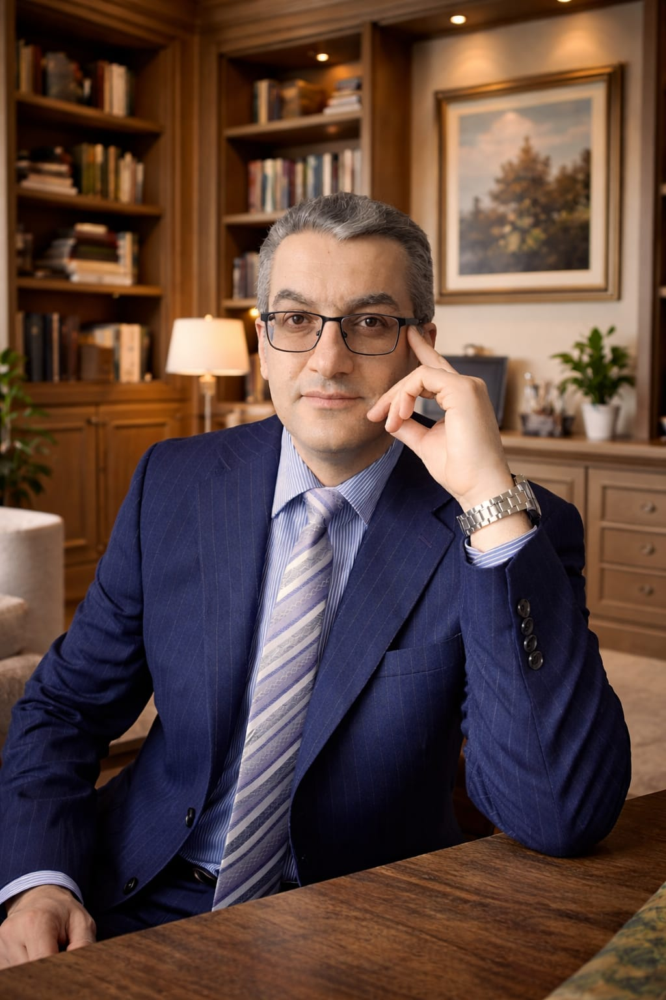

I am a Senior Member of IEEE and OPTICA, and an Associate Fellow of the Higher Education Academy (AFHEA). My research focuses on digital signal and image processing, machine learning, and medical imaging. I have served as Principal Investigator on grants totalling over £1.3M from EPSRC, UKRI, GACR, and dstl/ASTRID. I have published over 40 peer-reviewed articles in journals including Automatica, IEEE Access, and Information Sciences.
I currently teach Digital Signal Processing, Signal Analysis, and Information Management at postgraduate level, and I supervise PhD students in machine health diagnostics, structural health monitoring, and AI for medical imaging.
| Title | Funder | Role | Amount |
|---|---|---|---|
| Unique AI Imaging Model for Early Breast Cancer Detection | UKRI | PI | £546,000 (Under Review) |
| Machine Learning for Passive Sonar | dstl/ASTRID | PI | £8,000 (2022) |
| The use of orthogonal moments in image processing | Czech Science Foundation | PI | €65,000 (2018–2021) |
| Distributed Intelligent Ultrasound Imaging System | EPSRC | Project Manager | £1,300,000 (2018–2021) |
📧 barmak.honarvar@ieee.org
References available on request:
Prof. John Ahmet Erkoyuncu (Cranfield) · Dr. Ali Nabavi (Cranfield) · Prof. Jan Flusser (UTIA, Prague)